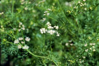
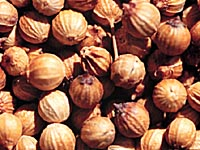
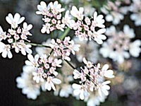
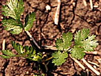

What is coriander?
Coriander (Coriandrum sativum), a member of the Umbelliferae or carrot family, is an annual spice crop. The fresh green herb is used in East Indian, Chinese, and Mexican cooking (where it is known as cilantro or chinese parsley).

Why is it produced?
Coriander powder is made from ground seeds and is used to flavour many food products such as curry, gin or prepared meats. The end-use market for coriander exists mainly in the large urban centres of North America.
Where is it produced?
Countries that grow and export coriander are Morocco, Romania, Bulgaria, Argentina, India and Canada. Moroccan coriander is often priced lower than Canadian. In order to compete in the coriander market, production in Canada should focus on high quality and consistent seed size to compete in export markets.
How much is produced?
Production of coriander in Saskatchewan has increased to over
5,000 ha (12,000 acres) in 1995. Average yield of large-seeded coriander
in Saskatchewan is approximately 900 kg/ha (800 lbs/acre).
Small-seeded coriander yield can be slightly more, if it matures.

What does coriander look like?
It has an erect, branching stem growing
to a height of about 0.6 metres (2 feet). It produces mature, round fruit consisting of two fused hemisphere-shaped seeds. The fruit is harvested and marketed intact. Mature seeds have a pleasant, spicy aroma.
The two types of coriander are the large seeded and the small seeded.
The large seeded type:
- have (diameter of 3 to 5 mm)
- is grown as a winter crop in areas with a Mediterranean-type climate, and as a spring crop in
northern temperate climates.
- is the main type or coriander produced in Saskatchewan
- has an oil content of 0.5 to 1%.
- has days-to-harvest of approximately 100 days.
The small-seeded (cilantro) type:
- is produced mainly in moderate temperate regions.
- has a longer days-to-harvest requirement (approximately 120 days) than the large-seeded type.
- is somewhat taller, and contains more essential oil than the large-seeded type.
- that is grown in Saskatchewan has an oil content of 1 to 1.5%.
Volatile oils such as linalool are responsible for the aroma of coriander. The oil of coriander should contain 60 to 70% linalool.

How is it produced?
Coriander is a heat-loving crop. It may be grown on a fairly wide range of soils, but is best adapted to well-drained loam and sandy-loam soils. Coriander germinates very slowly and may take as long as 21 days to emerge. It does not compete successfully
with weeds, especially perennial weeds, and should be planted on clean land.
Coriander
- yields can be improved through the use of honey bees as pollinators.
- should be seeded in late April to mid-May.
- crop may take 21 or more days to emerge, and has some tolerance to light spring frost. Research results have indicated higher seed yields and oil levels can be achieved by seeding earlier than May 20.
- requires both macro and micronutrients. Most Saskatchewan soils are low in nitrogen and phosphorus, many are low in sulphur, and some are low in
potassium and/or one or more micronutrients. Coriander requires a level of nutrients similar to cereals and oilseeds.
- is subject to damage by grasshoppers, leaf hoppers, root diseases, fungal diseases and hail/rain damage.
- is swathed when the fruit turns tan to brown colour and shattering of the fruit is not a severe problem
- may be straight combined when the crop is fully
mature.
- containing over 5% split fruit is usually discounted at time of purchase.
- oil is very volatile. The seed must cure during storage. Natural air drying (aeration) assists this curing.
- is graded by the buyer according to its aroma and appearance. Factors such as colour, stems, splits, and foreign material are taken into account. Buyers prefer a light tan colour with at least 99% pure whole seed.
Several companies trading in special crops in Saskatchewan offer production contracts for coriander.
|